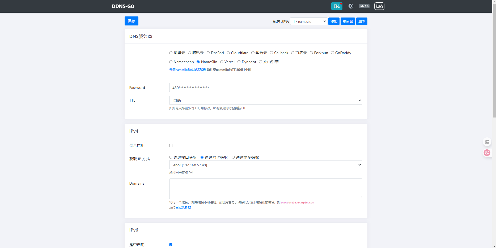

在使用该项目之前，你必须至少拥有一个可支配的域名，否则下文对您来说仅是一篇不同文章，而非操作笔记。
Version：DDNS-GO v6.7.6
# 介绍
ddns-go 是一个简易便捷的自动更新域名解析的工具，支持多平台、多架构、多服务商、多域名。
# 特性
- 支持 Mac、Windows、Linux 系统，支持 ARM、x86 架构
- 支持的域名服务商
阿里云腾讯云DnspodCloudflare华为云Callback百度云PorkbunGoDaddyNamecheapNameSiloDynadotDNSLA - 支持接口 / 网卡 / 命令获取 IP
- 支持以服务的方式运行
- 默认间隔 5 分钟同步一次
- 支持同时配置多个 DNS 服务商
- 支持多个域名同时解析
- 支持多级域名
- 网页中配置，简单又方便，默认勾选
禁止从公网访问 - 网页中方便快速查看最近 50 条日志
- 支持 Webhook 通知
- 支持 TTL
- 支持部分 DNS 服务商传递自定义参数，实现地域解析 / 多 IP 等功能
关于它的更多介绍及使用，可以参看该工程：https://github.com/jeessy2/ddns-go

# 安装
建立存放路径：
mkdir -p /app/ddns-go |
运行 Docker：
docker pull jeessy/ddns-go:latest | ||
docker run -d \ | ||
--name ddns-go \ | ||
--net=host \ | ||
-v /app/ddns-go:/root \ | ||
-e TZ=Asia/Shanghai \ | ||
--restart always \ | ||
jeessy/ddns-go \ | ||
-l :9877 -f 600 |
参数解释：
--net=host：使用 docker host 模式-l：通过传参命令，指定监听地址-f：通过传参命令，同步间隔时间 (秒)
# 使用
通过访问 http://localhost:9877 ，初次进入登录并配置管理账号：
登录进来后，选择你对应的域名服务器厂商并进行相应配置，不同的服务商，具体获取的 API Token 也不一样，因此这里就不多做解释了：
# ipv4
ipv4 目前还是主流的 IP 使用方式，因此可以直接使用网卡获取的方式进行：
当然，对于 ipv4 来说，并非每个人都能获取到公网 ipv4，如若没有公网 ipv4，那么则建议你停掉 ipv4 的启用更新。
# ipv6
通过网卡获取：
需要使用 docker host 模式，如果不能从网卡获取 240 开头的外网 ipv6 地址，那么将会显示 “没有找到可用的网卡” 不可选。
通过命令获取：
ip -6 addr show eth0 | grep -v deprecated | grep 'inet6 [^f:]' | awk -F' ' '{print $2}' | awk -F'/' '{print $1}' | tail -1 |
然后是步骤拆解：
ip -6 addr show eth0，显示网卡（eth0）的全部 ipv6 地址grep -v deprecated，去除已经失效（deprecated）的地址grep 'inet6 [^f:]'，显示有 ipv6 地址的那一行（不包含 f 开头的内网 ipv6 地址）awk -F' ' '{print $2}'，根据空格符号分列，打印第二列awk -F'/' '{print $1}'，根据斜杠符号 / 分列，打印第一列tail -1，显示最后一行
参看：DDNS-GO 通过命令获取有效的 IPv6 地址
# 重置密码
由于 ddns-go 设置密码必须使用复杂密码，因此如果忘记忘记，可以使用以下命令重置：
docker exec ddns-go ./ddns-go -resetPassword 123456 | ||
docker restart ddns-go |
或者进入容器的控制终端后台：
docker exec -it ddns-go /bin/sh | ||
ls -al /root/ | ||
total 16 | ||
drwxr-xr-x 2 root root 4096 Dec 1 15:50 . | ||
drwxr-xr-x 1 root root 4096 Dec 1 15:04 .. | ||
-rw------- 1 root root 180 Dec 1 16:13 .ash_history | ||
-rw------- 1 root root 958 Dec 1 16:28 .ddns_go_config.yaml | ||
vi /root/.ddns_go_config.yaml |
通过编辑 /root/.ddns_go_config.yaml 文件更改账号密码。